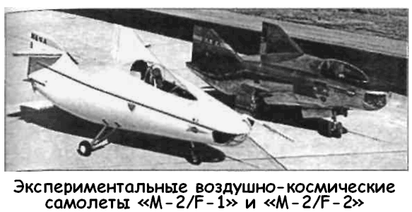
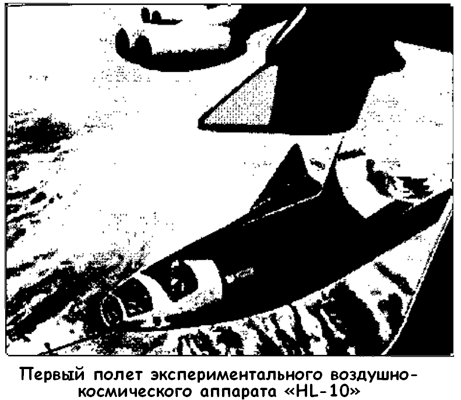

Крылатые космические корабли «М-2» и «HL-10»
Бесславный финал программы «Дайна-Сор» не охладил энтузиазма тех американских конструкторов, которые связывали будущее космонавтики с развитием авиации. С начала 1960-х годов всякая уважающая себя западная авиационная фирма выступила с проектом (или целой группой проектов) аэрокосмических аппаратов различного назначения: от военных ракетопланов до пассажирских сателлоидов.
В сентябре 1962 года фирма «Нортроп» («Northrop») начала испытания экспериментального планера «М-2/Ф-1» («M-2/F-1»), который должен был стать прототипом воздушнокосмического самолета.
Этот планер был изготовлен из листов фанеры из красного дерева толщиной 2,4 миллиметра. Шпангоуты толщиной 3,18 миллиметра также изготавливались из красного дерева, подкрепленного елью. Для наружной обшивки использовался дакрон, покрытый специальным лаком. Внутренняя конструкция и шасси были выполнены из сварных стальных труб. Передняя и задние стойки шасси были взяты от «Цессны 150» («Cessena 150»).
На летательном аппарате «M-2/F-1» использовалась обычная система управления планера. Для управления по тангажу применялись закрылки и наружные элевоны. Управление по крену осуществлялось за счет дифференциального управления элевонами. Для управления по курсу служили рули направления.
Вертикальные стабилизаторы, рули и элевоны изготавливались из алюминиевых листов толщиной 0,4 миллиметра. Закрылки сварены из алюминиевых труб и покрыты дакроном.
В кабине «М-2» устанавливалось модифицированное катапультируемое сиденье «Т-37», которое вместе с парашютом весило 45 килограммов. Кабину закрывал плексигласовый колпак, применяемый на планерах и обеспечивающий пилоту обзор вперед и в стороны. Буксировочный крюк был расположен на стойке переднего шасси ниже корпуса.
Кроме того, на «M-2/F-1» устанавливались маленькие твердотопливные двигатели тягой от 104 до 114 килограммов с временем действия 10 секунд.
Чтобы подтвердить результаты полученных расчетов на основе аэродинамических продувок моделей и оценить влияние реальной конструкции летательного аппарата на его характеристики, натурный планер «M-2/F-2» был испытан в большой аэродинамической трубе Исследовательского центра имени Эймса. Перед началом летных испытаний исследователи провели серию наземных буксировок с целью проверки управляемости аппарата и устойчивости движения по земле. По мере накопления пилотом опыта управления планером увеличивалась скорость буксировки вплоть до отрыва от поверхности земли. Скорость отрыва составила 138,7 км/ч. Во время этих испытаний в буксировочный трос вставлялось динамометрическое звено, позволявшее измерить натяжение троса и получить данные о величине силы лобового сопротивления. Перед первым настоящим полетом было проведено около 60 буксировочных испытаний.
В качестве самолетов-буксировщиков испытывались самолеты «К-47» («С-47») и «Стирман» («Stearman»). Вертикальная скорость подъема у самолета «Стирман» оказалась недостаточной, поэтому выбор остановили на «С-47».
Известно, что из-за низкой удельной нагрузки на крыло самолета-буксировщика буксируемый летательный аппарат может попасть в его турбулентный след и стать неуправляемым.
Было проведено несколько буксировок с использованием планеров, которые позволили оценить ускорения при взлете, наиболее выгодное положение летательного аппарата при буксировке, длину буксировочного троса, с тем чтобы свести влияние турбулентного следа самолета-буксировщика к минимуму. Эти испытания показали, что расположение буксируемого летательного аппарата выше самолета-буксировщика и применение буксировочного троса длиной 300 метров сводит эти нежелательные эффекты к минимуму.
Перед первым полетом «M-2/F-1» было проведено четыре запуска твердотопливных ракетных двигателей (два статических и два динамических), укрепленных на его конструкции, для демонстрации конструкционной жесткости и влияния работающих двигателей на управляемость и устойчивость летательного аппарата. Первый динамический запуск был проведен во время наземной буксировки с поднятым передним колесом при скорости 110 км/ч. Пилот не отметил возмущений ни в плоскости тангажа, ни в плоскости рыскания. Второе испытание двигателей было проведено уже после освобождения буксировочного троса, когда летательный аппарат находился на высоте около 3 метров над поверхностью Земли и имел скорость 175 км/ч. При этом эксперименте также не наблюдалось вредных эффектов. Наоборот, пилот заметил некоторое улучшение устойчивости полета летательного аппарата.
Летные испытания проводились на авиабазе Эдвардс (штат Калифорния). Взлет осуществлялся со дна высохшего озера, а сам полет выполнялся по кругу с таким расчетом, чтобы летательный аппарат мог сесть на это дно в случае обрыва троса при наборе высоты. Отсоединение летательных аппаратов от самолета-буксировщика осуществлялось на высоте 3000–3900 метров, откуда совершалось свободное планирование.
Последние 600 метров высоты использовались пилотом для маневрирования при подготовке к посадке.
Летательный аппарат «M-2/F-1» имел на своем борту измерительную систему, позволяющую получить полную информацию о его устойчивости и характеристиках движения.
Весной 1964 года руководство НАСА приняло решение см необходимости продолжения работ по созданию летательных аппаратов с несущим корпусом для изучения их поведения на сверхзвуковых скоростях. В апреле были отобраны два проекта, предложенные фирмой «Нортроп». Первый представлял собой улучшенный вариант планера «М-2» — «М-2/Ф-2» («M-2/F-2»), дооснащенный ракетным двигателем.
Другим проектом стал «ХЛ-10» («HL-10»), разработанный в Исследовательском центре имени Лэнгли.

На аппарате «M-2/F-2» весом 2,5 тонны устанавливался ракетный двигатель «XLR-11» (такой же, что и на ракетоплане «Х-1») тягой 2700 килограммов, работающий на этиловом спирте с жидким кислородом. Ракетоплан буксировался самолетом «В-52» и сбрасывался на высоте 14 километров.
Управление «M-2/F-2» осуществлялось аэродинамическими рулями, расположенными в хвостовой части; продольное управление — элевонами, поперечное — дифференциальным отклонением поверхностей. Путевое управление осуществлялось расщепляющимися рулями, которые могли быть использованы и в качестве воздушных тормозов.
Первый испытательный полет «M-2/F-2» состоялся 2 июля 1966 года Отделившись от самолета-носителя на скорости около 500 км/ч, аппарат совершил четырехминутный планирующий полет, сделал два разворота на 90° и произвел горизонтальную посадку на скорости около 300 км/ч.
Максимальная скорость, достигнутая при этом полете, составила 727 км/ч.
В 1966–1967 годах на «M-2/F-2» было выполнено еще 14 испытательных полетов и началась подготовка к следующему этапу — летным испытаниям с ракетным двигателем.
Двигатель должен был позволить аппарату «M-2/F-2» набирать самостоятельно высоту около 24 400 метров и развивать скорость до 2200 км/ч.
Однако 10 мая 1967 года во время своего шестнадцатого полета аппарат «M-2/F-2» потерпел катастрофу при посадке; пилот при этом серьезно пострадал. Специалистам фирмы «Нортроп» пришлось делать новый аппарат, который получил обозначение «М-2/Ф-3» («M-2/F-3»).
Экспериментальный аппарат «M-2/F-3» имел следующие характеристики: полная длина — 6,8 метра, максимальный диаметр — 2,9 метра, полная масса — 3600 килограммов, масса топлива — 1300 килограммов, тяга ракетного двигателя — 2700 килограммов, компоненты ракетного топлива — жидкий кислород и спирт.
Полеты нового ракетоплана начались в июле 1970 года и закончились 21 декабря 1972 года, когда программа была закрыта. Всего «M-2/F-2» совершил 43 полета, в том числе с включенным ракетным двигателем. В ходе испытаний удалось достичь скорости в 1,6 Маха и высоты в 21 800 километров.
Полученные результаты впоследствии были использованы при разработке концепции космоплана «Х-30» («Х-30»).
Вторым проектом фирмы «Нортроп», получившим одобрение НАСА, стал космический корабль горизонтальной посадки «ХЛ-10» («HL-10»). Внешне этот аппарат очень походил на «M-2/F-2» и имел следующие характеристики: длина — 6,75 метра, максимальный диаметр — 4,6 метра, максимальный вес (с баками водяного балласта) — 4082 килограмма, вес топлива — 1300 килограммов.
На «HL-10» устанавливался ракетный двигатель «XLR-11».
Однако первые испытания аппарата проводились с выключенным двигателем, полет осуществлялся за счет планирования после отделения от самолета-носителя.
Первый полет аппарата «HL-10» состоялся 22 декабря 1966 года, последний (тридцать седьмой) — 17 июля 1970 года.
В ходе испытаний удалось достичь скорости 1,86 Маха и высоты 27 700 метров.
Летом 1970 года программа испытаний «HL-10» была объявлена закрытой в связи с сокращением финансирования.
Тем не менее сегодня отдельные исследователи высказывают осторожное предположение, что этот проект был передан группе «Сканк Уоркс», и в 1972 году состоялось еще два экспериментальных полета, в ходе которых воздушно-космический аппарат «HL-10» выводился на орбиту ракетойносителем «Титан-3Б/Аджена-Д» («Titan 3B/Agena D»).
